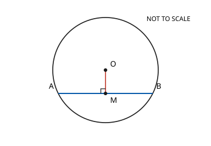

<script>if(location.hostname.endsWith('onrender.com'))location.replace('https://math-sandbox.pages.dev'+location.pathname+location.search+location.hash)</script>
<section class="theory" data-section="IGCSE-19.3">
<h2>19.3 Symmetry properties of circles</h2>
<p class="src">Based on Cambridge IGCSE Mathematics Core and Extended Coursebook (Karen Morrison and Nick Hamshaw), Chapter 19. The wording is original and follows the published section titles and the standard Cambridge IGCSE treatment of the topic. Printed pp.651–655.</p>
<p class="key-words"><strong>Key words:</strong> <em>perpendicular from the centre</em>, <em>equal chords</em></p>
<h3>Chords and the centre</h3>
<p>A circle is symmetric about every diameter. That symmetry gives three closely related facts about chords:</p>
<ul>
<li>The perpendicular from the centre of a circle to a chord bisects the chord.</li>
<li>The line from the centre to the midpoint of a chord is perpendicular to the chord.</li>
<li>The perpendicular bisector of a chord passes through the centre of the circle.</li>
</ul>
<p>So if a chord \(AB\) has midpoint \(M\) and the centre is \(O\), then \(OM\) is perpendicular to \(AB\), and triangle \(OMA\) is right-angled at \(M\). Pythagoras then relates the radius, the half-chord, and the distance of the chord from the centre:</p>
<p>\[OA^2=OM^2+AM^2.\]</p>
<figure><figcaption>The perpendicular from the centre to a chord bisects the chord. The diagram is not to scale.</figcaption></figure>
<p>Equal chords of a circle are equidistant from the centre, and chords that are equidistant from the centre are equal. Two chords of equal length can be mapped onto each other by a rotation about the centre, or by a reflection in a diameter.</p>
<div class="worked-example">
<h4>Worked example 1: A perpendicular from the centre</h4>
<p class="src">Coursebook, 19.3, Pythagoras-on-a-chord style. New numbers: half-chord \(8\) cm, distance \(6\) cm.</p>
<p>A chord of a circle is \(16\) cm long and is \(6\) cm from the centre. Find the radius of the circle.</p>
<ol class="steps">
<li>The perpendicular from the centre bisects the chord, so each half is \(8\) cm. <span class="mark">M1</span></li>
<li>The radius satisfies \(r^2=6^2+8^2=36+64=100\), so \(r=10\). <span class="mark">A1</span></li>
</ol>
<p class="final"><strong>Answer:</strong> \(10\) cm</p>
</div>
<div class="worked-example">
<h4>Worked example 2: Equal chords</h4>
<p class="src">Coursebook, 19.3, equal-chord style. New distances.</p>
<p>Two chords of a circle are equal in length. One of them is \(5\) cm from the centre. How far from the centre is the other chord?</p>
<ol class="steps">
<li>Equal chords are equidistant from the centre, so the other chord is also \(5\) cm from the centre. <span class="mark">B1</span></li>
</ol>
<p class="final"><strong>Answer:</strong> \(5\) cm</p>
</div>
<h3>Common mistakes</h3>
<ul>
<li>Using the whole chord, rather than half of it, in Pythagoras with the distance from the centre.</li>
<li>Assuming that a line from the centre to a chord is perpendicular when it has not been shown to meet the chord at its midpoint (or the other way around).</li>
</ul>
<h3>Past paper</h3>
<p>There is no whole past-paper question on this subsection alone; past-paper practice on circle theorems is in 19.4.</p>
<div class="quick-check">
<h4>Quick check 1</h4>
<p>A chord of a circle is \(8\) cm long and is \(3\) cm from the centre. Find the radius of the circle, in centimetres.</p>
<details><summary>Worked solution</summary>
<ol class="steps"><li>Each half-chord is \(4\) cm, and \(r^2=3^2+4^2=25\), so \(r=5\).</li></ol>
<p class="final"><strong>Answer:</strong> \(5\)</p>
</details>
</div>
<div class="quick-check">
<h4>Quick check 2</h4>
<p>A chord of a circle of radius \(13\) cm is \(5\) cm from the centre. Find the length of the chord, in centimetres.</p>
<details><summary>Worked solution</summary>
<ol class="steps"><li>Half the chord is \(\sqrt{13^2-5^2}=12\), so the chord is \(24\) cm long.</li></ol>
<p class="final"><strong>Answer:</strong> \(24\)</p>
</details>
</div>
<div class="quick-check">
<h4>Quick check 3</h4>
<p>A chord of a circle is \(8\) cm from the centre. A second chord of the same length lies on the opposite side of the centre. Find the distance, in centimetres, between the two chords.</p>
<details><summary>Worked solution</summary>
<ol class="steps"><li>Equal chords are equidistant from the centre, so the two chords are each \(8\) cm from the centre and on opposite sides. The distance between them is \(16\) cm.</li></ol>
<p class="final"><strong>Answer:</strong> \(16\)</p>
</details>
</div>
</section>
